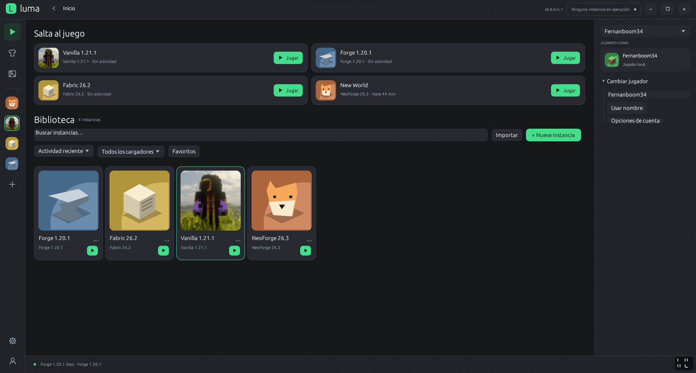
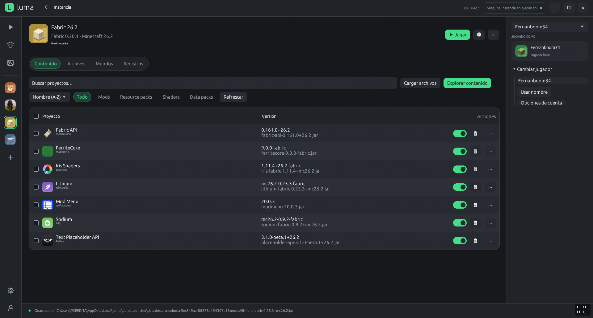
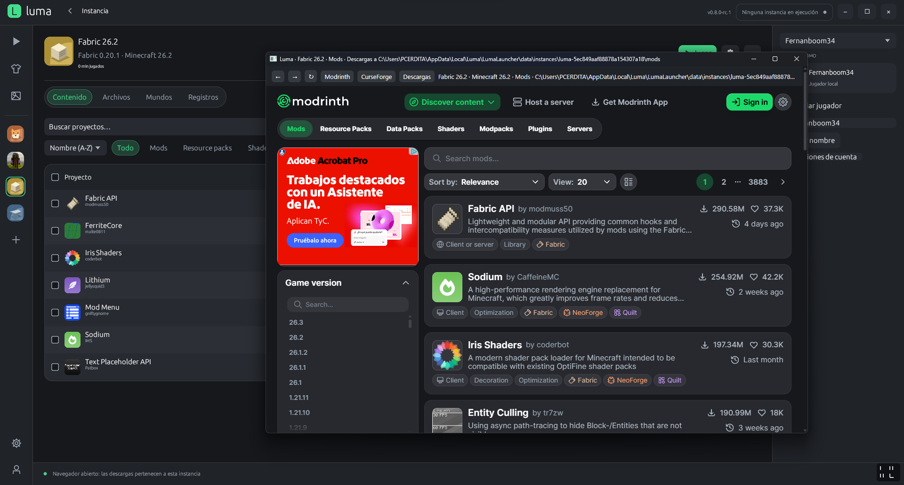

Todas tus instancias de Minecraft, en un solo lugar.
Luma es un launcher para Minecraft Java en Windows. Crea instancias con Fabric, Forge o NeoForge, instala mods desde Modrinth y entra al juego en segundos.
Windows 10 o superior, 64 bits. Juega con un perfil local o con tu cuenta Microsoft. Windows puede mostrar un aviso al abrir el instalador: te explicamos por qué.
Lo que hace Luma
- Instancias separadas
- Cada instancia tiene sus propios mods, mundos y ajustes. Duplícala, renómbrala o bórrala sin tocar las demás.
- Fabric, Forge y NeoForge
- Elige el loader y la versión de Minecraft al crear la instancia. Luma descarga Java y todo lo que falte.
- Mods desde Modrinth
- Busca e instala mods, resource packs y shaders dentro de Luma. Las dependencias obligatorias se añaden solas y cada archivo se verifica.
- Juega sin conexión
- Una vez instalada una versión, puedes abrirla sin internet. Tus mundos y tu configuración se quedan en tu equipo.
Así se ve
Captura pendiente
assets/biblioteca.png
assets/biblioteca.png

Captura pendiente
assets/instancia.png
assets/instancia.png

Captura pendiente
assets/catalogo.png
assets/catalogo.png

Cómo instalarlo
- Descarga Luma-Setup.exe con el botón de arriba y ábrelo.
- Si Windows muestra Windows protegió su PC, pulsa Más información y luego Ejecutar de todas formas.
- Acepta el permiso de administrador. El instalador copia Luma a Program Files.
Ese aviso aparece porque las versiones de Luma todavía no tienen firma de editor público. Windows lo muestra con cualquier programa nuevo, y no significa por sí solo que el archivo sea peligroso. Descarga siempre desde esta página o desde el release oficial.
Para comprobar que tu archivo es el publicado, calcula su hash en PowerShell y compáralo con SHA256SUMS.txt:
Get-FileHash -Algorithm SHA256 .\Luma-Setup.exe